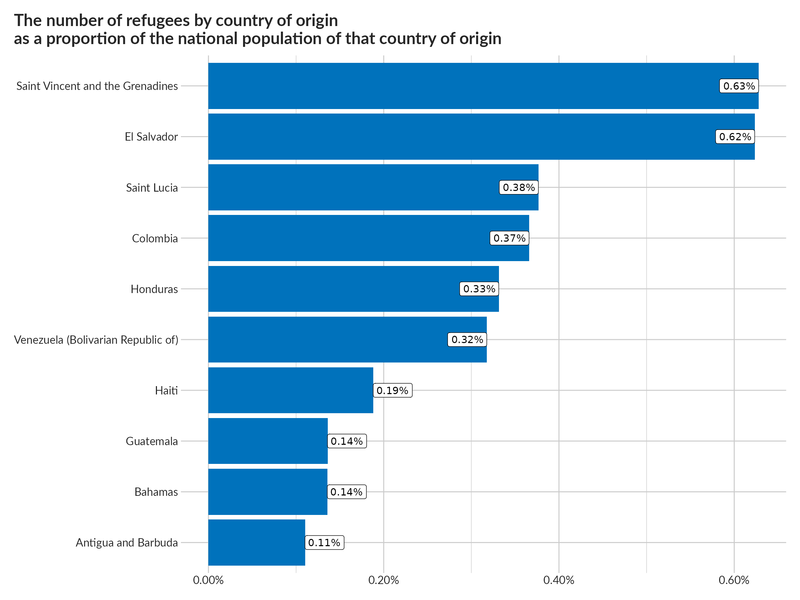
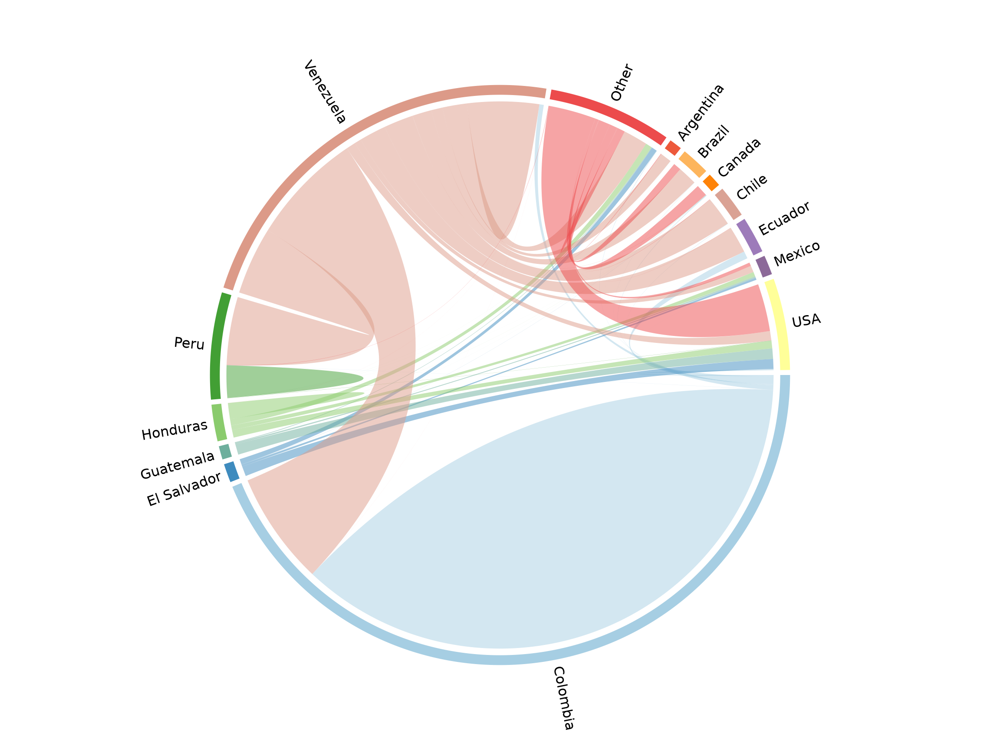
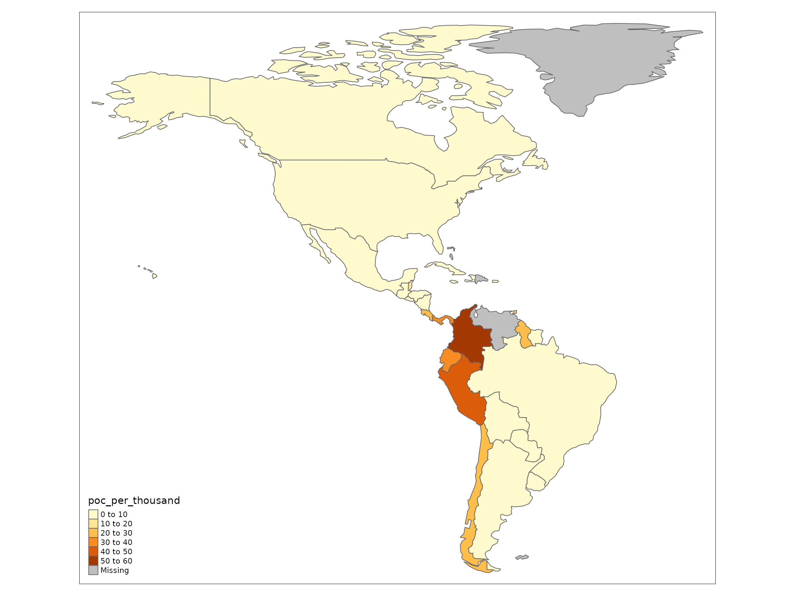

vignettes/regional-exploration.Rmd
regional-exploration.RmdNote that you can find the source code for all the chart below in the Repository.
SDG Indicator 10.7.4: Proportion of the population who are refugees, by country of origin

The following chart visualizes population movements between source and destination countries in the region. Countries that account for less than 1% of the population of concern were lumped together as “Other”.

Restricting attention to recognized refugees, here’s a breakdown of population increases/decreases by reason according to the mid-year statistical report:
Now using the number of persons in need of international protection per 1,000 host community members as a proxy for the refugee hosting burden across the region.

According to interviews and protection monitoring exercises conducted by UNHCR and partners, Venezuelans claim that they are leaving the country for a variety of reasons, including persecution on account of their individual profiles, insecurity and violence, lack of access to food, medicine and essential services, as well as loss of income as a result of the current human rights, political and socioeconomic situation in Venezuela.
Based on these reports, as well as reliable information in the public domain from a wide range of sources about the situation in Venezuela, UNHCR considers that for a number of profiles, international protection considerations are likely to arise under the 1951 Convention/1967 Protocol relating to the Status of Refugees depending on the circumstances of the individual case.
While individual circumstances and reasons for departure from Venezuela vary, UNHCR considers that the majority of Venezuelan nationals, or stateless persons who were habitually resident in Venezuela, are in need of international protection under the criteria contained in the Cartagena Declaration on the basis of threats to their lives, security or freedom resulting from the events that are currently seriously disturbing public order in Venezuela.
The following question topics are recommended as core topics in a population census:
In addition, it is recommended to include as a core census question: a) Reason for migration, with response categories: i) Employment (including military service) ii) Education and training iii) Marriage, family reunification or family formation iv) Forced displacement (refugees, asylum seekers, temporary protected status, others) v) Other
Due to movement restrictions and quarantine measures adopted by Governments to curb the spread of the pandemic, the ability of refugees and migrants to enter countries through regular pathways and stay with regular status has decreased in many countries of the region, due to closures of borders, but also due to the temporary full or partial suspension of asylum and regularization pathways as well as expiry of visa and residence permits. This has resulted in increased irregular border crossings and significantly heightened health and protection risks, negatively impacting access to basic goods and services.
With some governments in the region lifting movement and border restrictions towards the end of 2020, increasing numbers of re-entries from Venezuela are observed.